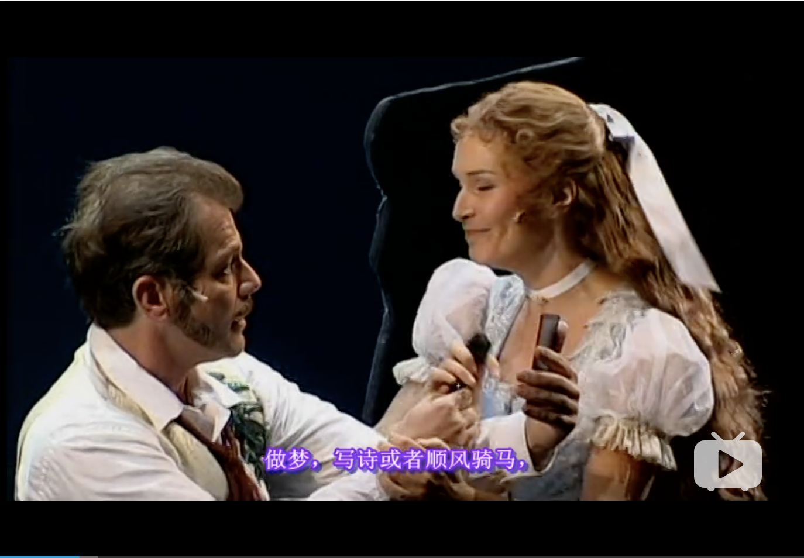

音乐剧：伊丽莎白（德 2005年）
《伊丽莎白》是以巴伐利亚公主、奥地利皇后与匈牙利王后伊丽莎白·亚美莉·欧根妮（Elisabeth Amalie Eugenie）的一生为素材所创作的德语音乐剧。
这部音乐剧讲述了奥地利与匈牙利王后伊丽莎白（茜茜公主）的故事，从她1854年的订婚和结婚开始，直至她在1898年被刺杀为止。
通过对她对死亡越来越迷恋的刻画，反映出她的婚姻和她的帝国走向衰亡的过程。
第一幕
剧的开场为鲁凯尼在死后被审判。鲁凯尼声称自己刺杀伊丽莎白只是为了满足她的愿望，因为她与死亡（Der Tod）相爱。鲁凯尼把伊丽莎白生活的时代的亡魂叫来为他作证。自此拉开鲁凯尼讲述伊丽莎白一生的故事的序幕。
伊丽莎白在自由自在、无忧无虑的环境中长大。当一次因为大胆调皮而从高处坠下时，她首次与死亡相遇，开始了她一生中与死亡之间既爱又恨的关系。
 一开始就可以见到伊丽莎白想要的其实是做梦，写诗，顺风骑马般的自由，只可惜造化弄人伊丽莎白的姐姐海伦娜被长辈们挑选为奥地利皇帝弗兰兹·约瑟夫的妻子，但弗兰兹·约瑟夫自己却选择了伊丽莎白。
婚礼的全程暗色调揭开了着从此灰暗婚姻的序幕
在婚礼时，死亡劝诱伊丽莎白，但被伊丽莎白拒绝。
伊丽莎白在婚礼上与死神共舞，从此王朝终结故事转折开始与皇帝成婚后，这段看似童话般的婚姻很快出现问题。伊丽莎白无法适应宫廷生活，感觉被禁锢，被弗兰兹·约瑟夫之母索菲精神虐待，并感觉缺少丈夫的关心。伊丽莎白与弗兰兹·约瑟夫的孩子鲁道夫出生后，因为孩子的养育问题，伊丽莎白与索菲再次发生剧烈冲突。弗兰兹·约瑟夫无法解开婆媳之间的不和。
与此同时，奥地利人民的生活陷入贫困，而伊丽莎白却过着骄奢的生活。（牛奶歌在此响起）鲁凯尼对此予以讽刺。
伊丽莎白与丈夫争执后，灵魂呼唤着自由.
（死神真的太魅惑）
第二幕
（一开始的管风琴串戏到歌剧魅影…）
死神再次诱惑着伊丽莎白，伊丽莎白与其共舞，但最终拒绝了他。（当我想跳舞在此响起）
童年的鲁道夫被与母亲分离，在偌大宫殿的黑暗中只有死亡的陪伴，因此把死亡当作朋友。
伊丽莎白参观疯人院后深受触动，灵魂再次呼唤自由。
索菲和大臣们为了减弱伊丽莎白对弗兰兹·约瑟夫的影响力，设计让弗兰兹·约瑟夫接触别的女人。大臣前往妓院挑选女人。死亡扮成医生，告知伊丽莎白她已从丈夫处染上性病。弗兰兹·约瑟夫与索菲发生激烈争吵。
经历了一系列变化，伊丽莎白变成了冷酷的女人。她抛开了皇宫、责任、孩子、家人，经年在世界各地独自旅行。
鲁道夫与匈牙利人的合谋被弗兰兹·约瑟夫发现。鲁道夫向母亲伊丽莎白求助，但被伊丽莎白冷淡地忽略了。鲁道夫被死亡夺取了性命，自杀了。伊丽莎白对儿子的死非常伤心。
在沉没的世界之船的甲板上，弗兰兹·约瑟夫与伊丽莎白会面，双方取得谅解，但已经物是人非。世界也已大变，欧洲皇室贵族不断没落或被推翻。奥匈帝国大厦将倾。
鲁凯尼刺杀伊丽莎白。伊丽莎白终于投入死亡怀抱。故事完结！
后记
茜茜公主并不是人们一般理解意义上的规矩的贵族女性，她不会弹琴，早期也不知道如何祝酒干杯，甚至不参加人生第一场舞会而躲在自己的房间里写诗。
皇家对公主的礼仪要求是举止稳重，而茜茜公主则是步履如飞。
她乐于在自然天性中成长，而她的家族则要求她成熟稳重、思虑周全、老成持重，他们不许茜茜公主笑，因为这会露出公主的黄牙。
Elisabeth的意义绝不止于一部“人物传记”音乐剧。创作者的野心相当宏大，以至于这作品蕴含了某种“私人/历史的二重性”的特质，将皇后个人的悲剧和世纪之交的奥匈帝国以至大德意志文化圈的悲剧隐秘地连为一体。伊丽莎白之追求极致自由而不得、反被其追求而禁锢，和德奥文化中的精神洁癖式地追求自由，反而被民族主义裹挟、在一战前终于面临苦涩的失败，有某种异曲同工的相似性。
Die Schatten werden laenger这首歌就唱出了一切。死神也不仅仅是伊丽莎白的死神，也是奥匈帝国（乃至整个君主政体）被民族主义推翻、日薄西山的象征。
也就是说，一个人追求自由，最终成了自己的精神洁癖的奴隶；一个民族追逐自由和崛起（的意识形态），最后成了民族主义的奴隶，这两样东西某种程度上是相似的。